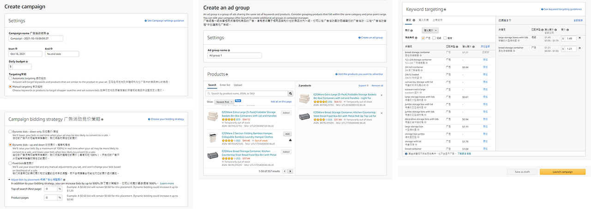

核心挑戰
把亞馬遜廣告的複雜的層級結構，轉成低學習成本、好操作且高自動化的 AI SaaS 產品。


在競爭激烈的跨境電商環境中，亞馬遜賣家長期受限於官方後台繁瑣的操作流程，使得賣家每日需耗費大量時間手動管理多筆廣告出價。 為此 Bqool Advertising 因此誕生，我們想重新打造一個第三方軟體協助用戶減少後台操作時間與提升廣告轉換率。
把亞馬遜廣告的複雜的層級結構，轉成低學習成本、好操作且高自動化的 AI SaaS 產品。
針對專案需求進行用戶訪談、梳理用戶痛點、流程圖規劃、設計系統建置、UI 視覺設計、prototype製作。
我們訪談兩類核心用戶,想了解他們使用亞馬遜官方後台的經驗。
表面痛點不同，
但共同KPI只有一個：效率。

用戶反饋 :
我想看Search Terms (關鍵字表現) ,但是要從Campaign(廣告活動)一層一層點進去才能看到
Campaigns → Ad Groups → Products → Targeting → Search Terms
每點一次loading資料又要等待非常浪費我的時間。
→ 來回跳頁、容易迷路、操作路徑至少要點擊5次
設計解法 :
將廣告階層（Goals | Campaigns | Ad Groups | Products | Targeting | Search
Terms）展開為水平 Tab
同頁切換視角，不用回上一頁，看數據、改設定都在同一個工作區。
用戶反饋 : 幫我寫

設計解法 :

扁平化管理降低切換與返回成本，縮短日常監控與調整的作業時間。
AI廣告策略降低填錯風險，讓小白能在低焦慮下完成首次上線。
同頁可視化狀態與關鍵 KPI，減少迷航造成的誤調、漏調與預算浪費。